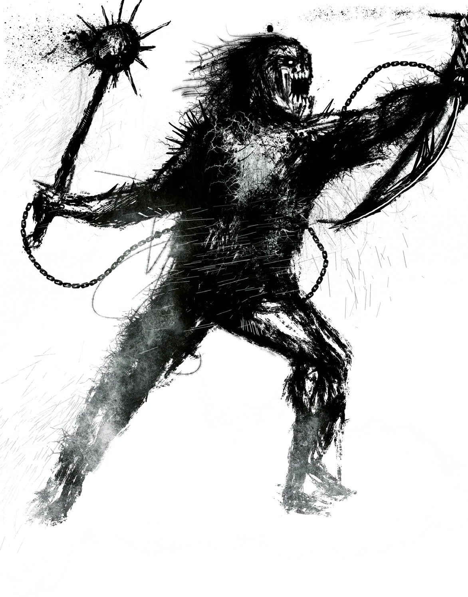

Die Gruppe
+ CharakterKarg
7/11TP
Fangzahn-Deserteur
STÄ +2GES −1PRÄ 0ZÄH +1Infiziert
Velma die Bleiche
4/6TP
Esoterische Eremitin
STÄ −2GES 0PRÄ +3ZÄH −1Mächte 2/5
Hargha
9/9TP
Gossenabschaum
STÄ 0GES +2PRÄ +1ZÄH 0
Brint
0/8TP
Ketzerpriester
Gebrochen: W4 = 3 · Blutung, Tod in W2 Std.
Gewalt
Kampf beendenInitiative W6

Goblin
S. 58×3TP 6 · Moral 7
Sehnige Haut −W2 · Messer/Kurzbogen W4
Sehnige Haut −W2 · Messer/Kurzbogen W4
Schnell, Angriffe und Verteidigung gegen ihn sind SG14.
1
2
3
Moral prüfenAnführer totHälfte ausgeschaltet⅓ TP übrig

Zukuma
S. 60×1TP 13 · Moral 9
Gehärtete Haut −W2
Führt (W4): Langer Flegel W8 · Schwerer Streitkolben W6 · Kettenschwert W6 · Riesiger Kriegshammer W10
Gehärtete Haut −W2
Führt (W4): Langer Flegel W8 · Schwerer Streitkolben W6 · Kettenschwert W6 · Riesiger Kriegshammer W10
Greift pro Runde zweimal an, hat aber keine Zeit zur Verteidigung (SG10, um ihn zu treffen).
1
+ Kreatur auf den Tisch